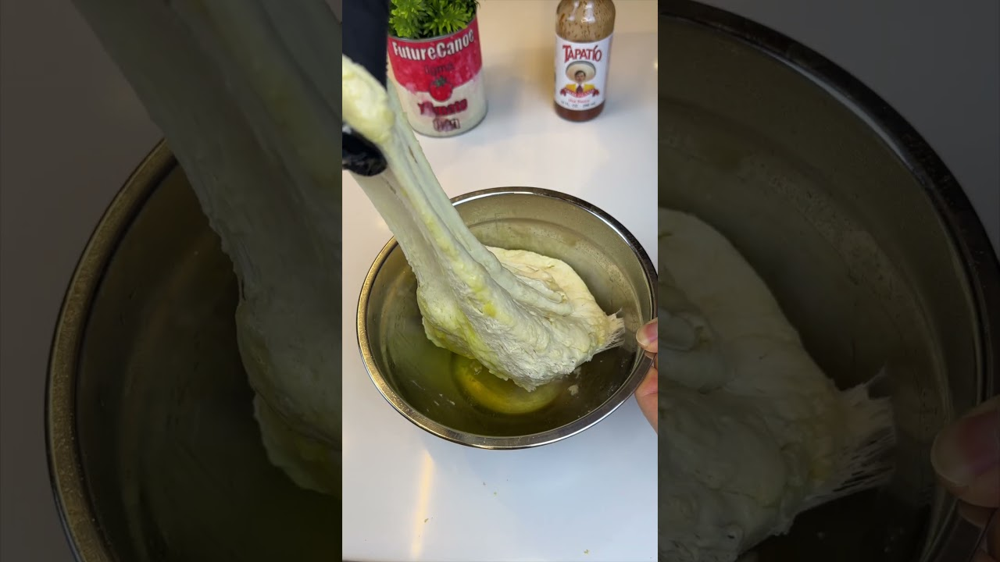

Daen Lia's famously wet, famously easy focaccia — 98% hydration, zero kneading, the fridge does the work. As made in FutureCanoe's video, from Daen's Kitchen's written recipe. Weigh the flour and water if you can — this dough forgives everything except bad math.
Stir the yeast and honey into the lukewarm water and give it 5 minutes to wake up and foam. Whisk the flour and salt together in a big bowl.
Pour the yeast water and the ¼ cup olive oil into the flour and mix until no dry patches remain. It will look more like thick batter than dough. That's correct — don't add flour.
Over the next half hour or so, do a few rounds of stretch and folds at 10-minute intervals: wet hand, grab an edge, stretch it up, fold it over. Quarter-turn, repeat around the bowl.
Move the dough to a well-oiled bowl, cover, and cold-ferment in the fridge 12–72 hours. Longer is lighter; 24–48 hours is the sweet spot.
Meanwhile, make the confit: cloves in a small pot, covered with the cup of olive oil, bare simmer for 30–40 minutes until golden and spoon-soft. Keep the oil.
Pour the cold dough into a generously oiled 9×13 pan and nudge it toward the corners without forcing. Cover and let it rise somewhere warm about 2 hours, until doubled and jiggly.
Oven to 400°F. Oil your fingers and dimple the whole surface to the bottom of the pan. Press in about 12 confit cloves, drizzle with the garlic oil, and scatter the rosemary and flaky salt.
Bake about 30 minutes, until deeply golden. Cool in the pan just long enough to prove you can, then eat it warm, dragged through more of the garlic oil.